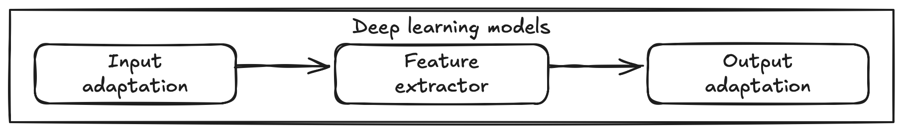

12 Exploring Advanced Neural Networks: Instance Segmentation
Overview
In this section, we will explore the journey of the evolution of neural networks, starting with basic classification networks and progressing to more complex tasks of object detection and instance segmentation.
We’ll begin with a recap of classification networks, which are designed to identify the presence of objects in images and assign class labels. From there, we’ll move to the realm of object detection, exploring the development of R-CNN 1, Fast R-CNN 2, and Faster R-CNN 3. Each of these models represents a step forward in detecting and localizing objects within images, with Faster R-CNN introducing a more efficient and integrated approach.
Finally, we’ll delve into Mask R-CNN 4, which extends the capabilities of Faster R-CNN by adding a branch for predicting segmentation masks. This enhancement allows us to not only detect objects but also delineate their exact shapes, enabling precise instance segmentation.
Our goal is to build on your existing understanding of classification networks, providing you with practical insights into how these networks can be adapted and expanded for more advanced computer vision applications. By the end of this section, you will be equipped with the knowledge to understand and apply these techniques to real-world challenges.
12.1 What is instance segmentation?

To grasp the concept of instance segmentation, let’s compare it with other related tasks:
- Image recognition: This is the most basic task, where the model identifies the presence of objects in an image and assigns class probabilities. It’s like saying, “There are sheep and a dog here,” without specifying their locations.
- Semantic segmentation: This advances to classifying each pixel into a category, effectively coloring the entire image based on object classes. However, it doesn’t distinguish between individual instances of the same class. For example, all sheep might be colored the same, treating them as a single entity.
- Object detection: This task detects objects and distinguishes them by drawing bounding boxes around each, providing more detail than image recognition. It identifies individual objects but lacks fine-grained, pixel-level detail.
- Instance segmentation: This is the most detailed task, combining the strengths of object detection and semantic segmentation. It not only distinguishes individual objects but also delineates their exact shapes at the pixel level. It allows for precise analysis and manipulation.
Instance segmentation is more challenging and computationally intensive than other tasks, and it’s not always necessary for every application.
Consider which of these tasks would be most useful for your current projects or applications.
12.2 Importance and applications of instance segmentation
Instance segmentation plays a crucial role in various fields. Its importance stems from the following factors:
- Fine-grained precision: Unlike object detection, which only provides bounding boxes, instance segmentation offers pixel-level accuracy. This precision is essential for tasks where understanding the exact shape and position of objects matters.
- Object differentiation: It not only identifies the presence of objects but also distinguishes between individual instances of the same class. This capability is valuable in scenarios where multiple objects of the same type need to be analyzed separately.
- Integration in complex systems: By providing detailed object masks, instance segmentation enables more sophisticated interactions with objects in the environment, such as robotics and augmented reality applications.
Applications:
- Medical imaging: In medical applications, instance segmentation can help identify and analyze specific structures within images, such as tumors or organs 5.
- Robotics: In robotics, instance segmentation enables robots to perceive and interact with their environment more effectively, distinguishing between different objects and obstacles 6.
- Environmental monitoring: Instance segmentation can be used in environmental mapping to detect and classify natural features from satellite imagery. This approach enhances the ability to monitor changes in landscapes across large areas with high accuracy 78.
Consider how the ability to identify not just the presence of objects, but also their precise contours, might enhance applications you are familiar with.
12.3 Transitioning from backbone networks to classification networks
 In the previous section, we discussed how deep learning models consist of three core components: input adaptation, feature extractor, and output adaptation. Now, let’s explore how these components are configured starting from a backbone network, like ResNet-50, to create a classification network.
ResNet-50 as a backbone network
Using a ResNet-50 backbone network as an example, let’s first examine the structure of the model:
The output of the code snippet above provides the architecture of the ResNet-50 model, which includes a series of convolutional and batch normalization layers, typically used for feature extraction:
The output above is a liitle verbose, so let’s summarize the key components of the ResNet-50 model:
Modifying the ResNet-50 model to perform classification
To modify the ResNet-50 model to perform classification, we first need to define the task. For this example, we will classify images into 10 classes, e.g., 10 different types of food. So, for the data, we have
- input: an image
- output: a 10-dimensional vector of class probabilities
How would you modify the ResNet-50 model to perform classification?
Let’s examine the three components of the model and see how we can modify them to perform classification.
Done! We have modified the ResNet-50 model to perform classification. Here is the complete code:
- Using the ResNet-50 model as a backbone network, is there other way to modify the model to perform classification?
- With the classification task as an example, try to think of how to modify the model to perform instance segmentation.
12.4 A step-by-step guide to instance segmentation
To achieve instance segmentation, let’s begin from object detection and progress to instance segmentation since object detection is like a simplified version of instance segmentation. Below, we list the input and output of object detection and instance segmentation.
| Task | Input | Output |
|---|---|---|
| Object Detection | Image | Bounding boxes and class labels for each instance |
| Instance Segmentation | Image | Bounding boxes, masks and class labels for each instance |
12.4.1 The First Step: R-CNN
Our journey begins with the introduction of Region-based Convolutional Neural Networks (R-CNN).
Imagine you are tasked with finding specific items in a crowded room (the image). The first step you need is a strategy to pinpoint potential areas where the items might be located. This is where Selective Search 9 comes into play. It acts like a diligent assistant that systematically scans the image, suggesting potential regions that might contain the items. Once you have these potential regions, the next step is to understand what each region contains. In our example, we use ResNet-50 to extract features from each region. With the features in hand, we then use a linear Support Vector Machine (SVM) to classify each region into one of the 10 classes. But recognizing objects is just part of the story. To ensure precision in locating these objects, we employ a linear regression model to refine the coordinates of the bounding boxes.
Summary of R-CNN components:
- Region proposal (selective search): Generate potential object regions.
- Feature extraction (ResNet-50): Extract features from each region.
- Classification (linear SVM): Classify each region into one of the 10 classes.
- Bounding box regression (linear regression): Refine the coordinates of the bounding boxes.
Limitations of R-CNN:
- Slow inference: Processes each region independently, leading to inefficiency.
- Complex training: Requires multiple models and stages.
- Inefficient feature extraction: Redundant computations for overlapping regions.
12.4.2 Evolution to Fast R-CNN
Continuing our journey towards instance segmentation, we move from the foundational R-CNN to a more advanced and efficient model: Fast R-CNN. This evolution is necessary to overcome the challenges faced by R-CNN.
In our quest for faster and more efficient object detection, Fast R-CNN addresses the limitations of its predecessor, R-CNN. Imagine now that instead of examining each potential object region individually, you first take a comprehensive view of the entire scene. This panoramic approach forms the basis of Fast R-CNN.
Feature extraction (single pass): Fast R-CNN starts by processing the entire image in a single forward pass through the network, using a shared convolutional feature map. This method not only accelerates the process but also eliminates the need to repeatedly extract features for overlapping regions, directly addressing the inefficiency of R-CNN.
Region proposal (selective search): Although it continues to use Selective Search to suggest possible object regions, the way these proposals are handled is integrated into a more streamlined workflow.
RoI pooling: To efficiently zoom into specific regions of interest (RoIs), Fast R-CNN introduces RoI Pooling. This component crops and resizes the shared feature map for each proposed region, much like focusing a camera lens on the areas of interest. RoI Pooling ensures that each region is presented in a consistent shape to the classifier, optimizing the use of features extracted in the initial pass.
Classification and bounding box regression (fully connected layers): Fast R-CNN employs fully connected layers to perform both classification and bounding box regression simultaneously. This integration simplifies the training pipeline and ensures that both tasks benefit from the shared feature representation, in contrast to the separate models used in R-CNN.
Summary of Fast R-CNN Components:
- Feature extraction (single pass): Processes the entire image once, reducing redundancy and speeding up inference.
- Region proposal (selective search): Still used, but proposals are more efficiently integrated into the workflow.
- RoI pooling: Efficiently refines regions of interest for classification and bounding box adjustments.
- Classification and bounding box regression (fully connected layers): Conducts these tasks concurrently, simplifying the model architecture.
Solving R-CNN Limitations:
- Slow inference: Addressed by processing the entire image in a single pass, reducing computational load.
- Complex training pipeline: Simplified by integrating classification and regression within a unified model.
- Inefficient feature extraction: Eliminated by using shared feature maps, reducing redundant processing.
Limitations of Fast R-CNN:
- Dependence on slow region proposal methods: The reliance on Selective Search for region proposals limits the speed of the overall system.
- Separate proposal and detection stages: Although integrated more efficiently than R-CNN, the use of Selective Search still represents a bottleneck.
- Potential for further speed improvements: While faster than R-CNN, Fast R-CNN does not fully utilize potential speed optimizations through end-to-end training of the proposal mechanism.
12.4.3 Introducing Faster R-CNN
As we progress in our journey towards instance segmentation, we arrive at Faster R-CNN, which further refines the processes established by Fast R-CNN. This model addresses the bottlenecks that persisted in previous approaches, particularly regarding region proposal efficiency.
12.4.4 The Innovation of Faster R-CNN
Faster R-CNN represents a significant leap forward in object detection by introducing a component that eliminates the dependence on slow external region proposal methods. This innovation stems from the integration of a Region Proposal Network (RPN), which transforms the object detection process into a unified, end-to-end trainable system.
Feature extraction (single pass): Like Fast R-CNN, Faster R-CNN begins by processing the entire image in a single pass through a convolutional network to produce a shared feature map. This ensures efficient feature extraction and serves as the foundation for both region proposal and object detection tasks.
Region proposal network (RPN): The key innovation of Faster R-CNN is the RPN, which is integrated directly into the convolutional feature map. The RPN efficiently generates region proposals by sliding a small network over the shared feature map. This network outputs a set of objectness scores and refined bounding box coordinates for anchors at each spatial location, effectively replacing the slow Selective Search process used in Fast R-CNN.
RoI pooling: After generating region proposals, Faster R-CNN employs RoI Pooling to extract fixed-size feature maps from the shared feature map for each proposal. This ensures that each region of interest is consistently prepared for the subsequent classification and bounding box refinement stages.
Classification and bounding box regression (fully connected layers): The proposals are then fed into fully connected layers for simultaneous classification and bounding box regression, refining both the class labels and bounding box coordinates.
Summary of Faster R-CNN Components:
- Feature extraction (single pass): Processes the entire image once, providing a shared feature map for all subsequent tasks.
- Region proposal network (RPN): Generates high-quality region proposals directly from the feature map, replacing slower methods.
- RoI pooling: Standardizes proposal feature maps for further processing.
- Classification and bounding box regression (fully connected layers): Conducts these tasks effectively and efficiently, using the refined proposals.
Addressing Fast R-CNN Limitations:
- Dependence on slow region proposal methods: Solved by integrating the RPN, which provides fast and efficient region proposals.
- Separate proposal and detection stages: Unified into a single, end-to-end trainable model.
- Potential for further speed improvements: Realized through the RPN, which allows for significant speed gains and paves the way for real-time object detection capabilities.
12.5 Transition to Instance Segmentation: Mask R-CNN
Having refined the processes of object detection with Faster R-CNN, we now transition to the realm of instance segmentation with Mask R-CNN. This model not only detects objects but also delineates each instance with precise pixel-level masks, taking the capabilities of Faster R-CNN a step further.
Mask R-CNN builds upon the robust framework of Faster R-CNN, adding a crucial component for instance segmentation. It retains the speed and efficiency of Faster R-CNN while introducing new functionality without compromising performance.
Feature extraction (single pass): Mask R-CNN, like its predecessor, begins by processing the entire image in a single pass through a convolutional network to produce a shared feature map. This feature map serves as the foundation for both region proposal and instance segmentation tasks.
Region proposal network (RPN): The RPN continues to play a pivotal role in generating high-quality region proposals directly from the shared feature map. This component ensures that only the most promising regions are considered for further processing.
RoI Align: To address the spatial misalignment introduced by RoI Pooling in Faster R-CNN, Mask R-CNN introduces RoI Align. This new component improves the precision of feature extraction by avoiding quantization errors, ensuring that the extracted feature maps for each region of interest are perfectly aligned with the input image.
Classification, bounding box regression, and mask prediction (parallel heads): Mask R-CNN extends the two-head structure of Faster R-CNN by adding a third branch specifically for mask prediction. This additional branch predicts a binary mask for each region of interest, allowing the model to not only classify objects and refine bounding boxes but also generate accurate pixel-level masks.
Summary of Mask R-CNN Components:
- Feature extraction (single pass): Processes the entire image once, ensuring efficient use of computational resources.
- Region proposal network (RPN): Continues to provide fast and efficient region proposals.
- RoI Align: Refines feature extraction for precise spatial alignment.
- Classification, bounding box regression, and mask prediction (parallel heads): Conducts these tasks simultaneously, enabling comprehensive instance segmentation.
Enhancements from Faster R-CNN:
- Pixel-level precision: Achieved through RoI Align, improving spatial alignment and mask accuracy.
- Instance segmentation capability: Added through the mask prediction branch, enabling the model to generate detailed masks for each object instance.
12.6 Conclusion
We’ve explored the evolution from R-CNN to Mask R-CNN, showing how each step builds on the last to improve performance. This process demonstrates how you can apply similar improvements to tackle a wide range of advanced tasks, not just instance segmentation. By understanding these developments, you’re equipped to enhance existing models and create innovative solutions for various challenges in computer vision.
R. Girshick, J. Donahue, T. Darrell, J. Malik, “Rich feature hierarchies for accurate object detection and semantic segmentation,” CVPR 2014.↩︎
S. Ren, K. He, R. Girshick, J. Sun, “Faster R-CNN: Towards Real-Time Object Detection with Region Proposal Networks,” NIPS 2015.↩︎
K. He, G. Gkioxari, P. Dollár, R. Girshick, “Mask R-CNN,” ICCV 2017.↩︎
https://www.linkedin.com/pulse/medical-image-diagnosis-roles-object-detection-segmentation-egvcc↩︎
Zhang, W., Witharana, C., Liljedahl, A. K., & Kanevskiy, M. (2018). Deep convolutional neural networks for automated characterization of arctic ice-wedge polygons in very high spatial resolution aerial imagery. Remote Sensing, 10(9), 1487.↩︎
Li, W., Hsu, C. Y., Wang, S., Witharana, C., & Liljedahl, A. (2022, November). Real-time GeoAI for high-resolution mapping and segmentation of arctic permafrost features: the case of ice-wedge polygons. In Proceedings of the 5th ACM SIGSPATIAL international workshop on AI for geographic knowledge discovery (pp. 62-65).↩︎
J. Uijlings, K. van de Sande, T. Gevers, and A. Smeulders, “Selective search for object recognition,” International Journal of Computer Vision, vol. 104, no. 2, pp. 154-171, 2013.↩︎